Lokesh Mano • 18-Oct-2022
This is an introduction to shiny web applications with R. Please follow the exercise to familiarise yourself with the fundamentals. And then you can follow instructions to build an app with interactive plots related to the Covid data. Code chunks starting with shinyApp() can be simply copy-pasted to the RStudio console and run. Generally, complete shiny code is saved as a text file, named for example, as app.R and then clicking Run app launches the app.
1 UI • Layout
This is an example to show the layout of widgets on a webpage using shiny functions. fluidPage() is used to define a responsive webpage. titlePanel() is used to define the top bar. sidebarLayout() is used to create a layout that includes a region on the left called side bar panel and a main panel on the right. The contents of these panels are further defined under sidebarPanel() and mainPanel().
In the main panel, the use of tab panels are demonstrated. The function tabsetPanel() is used to define a tab panel set and individual tabs are defined using tabPanel(). fluidRow() and column() are used to structure elements within each tab. The width of each column is specified. Total width of columns must add up to 12.
library(shiny)
ui <- fluidPage(
titlePanel("Title Panel"),
sidebarLayout(
sidebarPanel(
helpText("Sidebar Panel")
),
mainPanel(tabsetPanel(
tabPanel("tab1",
fluidRow(
column(6,helpText("Col1")),
column(6,
helpText("Col2"),
fluidRow(
column(4,style="background-color:#b0c6fb",
helpText("Col1")
),
column(4,style="background-color:#ffa153",
helpText("Col2")
),
column(4,style="background-color:#b1f6c6",
helpText("Col3")
)
)
)
)
),
tabPanel("tab2",
inputPanel(helpText("Input Panel"))
),
tabPanel("tab3",
wellPanel(helpText("Well Panel"))
)
)
)
)
)
server <- function(input,output){}
shinyApp(ui=ui,server=server)plot

2 UI • Widgets • Input
Input widgets are used to accept content interactively from the user. These widgets usually end in Input like selectInput(). Below are usage examples of several of shiny’s built-in widgets. Every widget has a variable name which is accessible through input$ in the server function. For example, the value of a variable named text-input would be accessed through input$text-input.
shinyApp(
ui=fluidPage(
fluidRow(
column(6,
fileInput("file-input","fileInput:"),
selectInput("select-input",label="selectInput",choices=c("A","B","C")),
numericInput("numeric-input",label="numericInput",value=5,min=1,max=10),
sliderInput("slider-input",label="sliderInput",value=5,min=1,max=10),
textInput("text-input",label="textInput"),
textAreaInput("text-area-input",label="textAreaInput"),
dateInput("date-input",label="dateInput"),
dateRangeInput("date-range-input",label="dateRangeInput"),
radioButtons("radio-button",label="radioButtons",choices=c("A","B","C"),inline=T),
checkboxInput("checkbox","checkboxInput",value=FALSE),
actionButton("action-button","Action"),
hr(),
submitButton()
)
)
),
server=function(input,output){},
options=list(height=900))plot
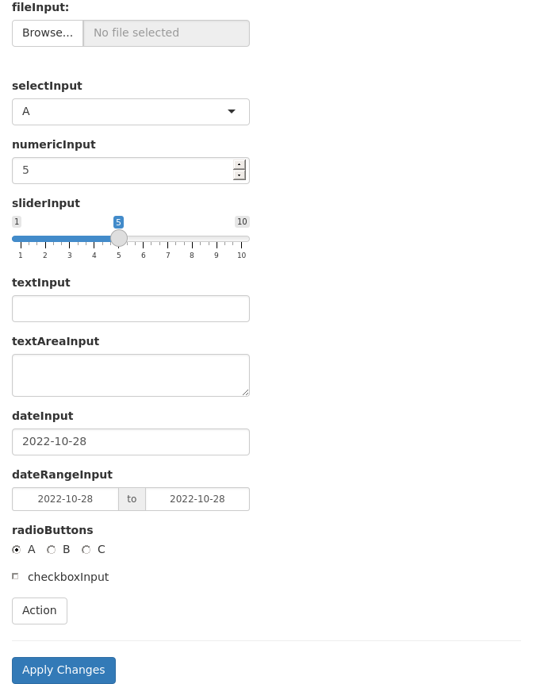
3 UI • Widgets • Outputs
Similar to input widgets, output widgets are used to display information to the user on the webpage. These widgets usually end in Output like textOutput(). Every widget has a variable name accessible under output$ to which content is written in the server function. Render functions are used to write content to output widgets. For example renderText() is used to write text data to textOutput() widget.
shinyApp(
ui=fluidPage(fluidRow(column(6,
textInput("text_input",label="textInput",value="<h3 style='color:red'>Red text</h3>"),
hr(),
htmlOutput("html_output"),
textOutput("text_output"),
verbatimTextOutput("verbatim_text_output"),
tableOutput("table_output"),
plotOutput("plot_output",width="300px",height="300px")
))),
server=function(input, output) {
output$html_output <- renderText({input$text_input})
output$text_output <- renderText({input$text_input})
output$verbatim_text_output <- renderText({input$text_input})
output$table_output <- renderTable({iris[1:3,1:3]})
output$plot_output <- renderPlot({
plot(iris[,1],iris[,2])
})
},
options=list(height=700))plot
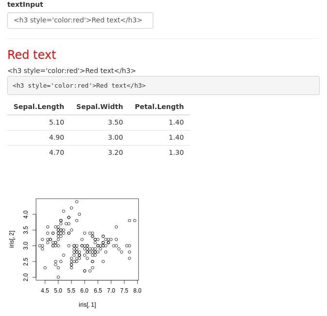
In this example, we have a text input box which takes user text and outputs it in three different variations. The first output is html output htmlOutput(). Since the default text is html content, the output is red coloured text. A normal non-html text would just look like normal text. The second output is normal text output textOutput(). The third variation is verbatimTextOutput() which displays text in monospaced code style. This example further shows table output and plot output.
4 Dynamic UI
Sometimes we want to add, remove or change currently loaded UI widgets conditionally based on dynamic changes in code execution or user input. Conditional UI can be defined using conditionalPanel(), uiOutput()/renderUI(), insertUI() or removeUI. In this example, we will use uiOutput()/renderUI().
In the example below, the output plot is displayed only if the selected dataset is iris.
shinyApp(
ui=fluidPage(
selectInput("data_input",label="Select data",
choices=c("mtcars","faithful","iris")),
tableOutput("table_output"),
uiOutput("ui")
),
server=function(input,output) {
getdata <- reactive({ get(input$data_input, 'package:datasets') })
output$ui <- renderUI({
if(input$data_input=="iris") plotOutput("plot_output",width="400px")
})
output$plot_output <- renderPlot({hist(getdata()[, 1])})
output$table_output <- renderTable({head(getdata())})
})plot
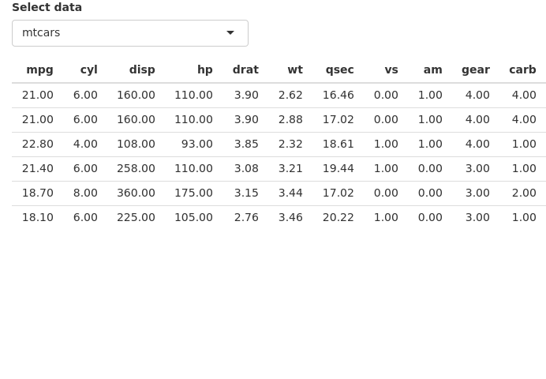
Here, conditional UI is used to selectively display an output widget (plot). Similarly, this idea can be used to selectively display any input or output widget.
5 Reactivity
We will here first look into the example of what the automatic reactivity of Rshiny looks like. The reactive functions like renderPlot() and renderPrint() are always looking for any changes in the input values and are updated quickly! Although this is super handy for any app, sometimes this can lead to unwanted confusion. Like, take the R function rnorm(), this function basically spits out random numbers. If you use this function in an app, everytime this function is called, it will output different random number sets. This can cause problems like in the example below:
Task Try to change the slider input values and check if the summary and hist match with each other?
ui <- fluidPage(
sliderInput(inputId = "num",
label = "Choose a number",
value = 25, min = 1, max = 100),
plotOutput("hist"),
verbatimTextOutput("stats")
)
server <- function(input, output) {
output$hist <- renderPlot({
hist(rnorm(input$num))
})
output$stats <- renderPrint({
summary(rnorm(input$num))
})
}
shinyApp(ui = ui, server = server)plot
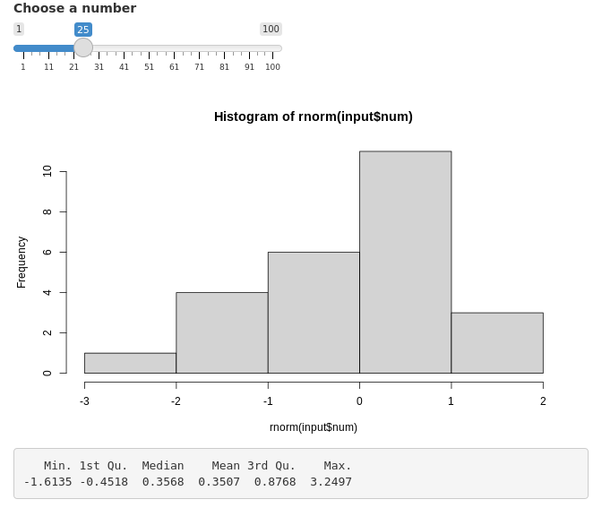
So, in order to make it consistent, we have to use the rnorm() only once and save it as a reactive function and then apply it to both the hist() and summary(). We do this by using reactive() function to store it as a variable. See the example below:
ui <- fluidPage(
sliderInput(inputId = "num",
label = "Choose a number",
value = 25, min = 1, max = 100),
plotOutput("hist"),
verbatimTextOutput("stats")
)
server <- function(input, output) {
data <- reactive({
rnorm(input$num)
})
output$hist <- renderPlot({
hist(data())
})
output$stats <- renderPrint({
summary(data())
})
}
shinyApp(ui = ui, server = server)plot
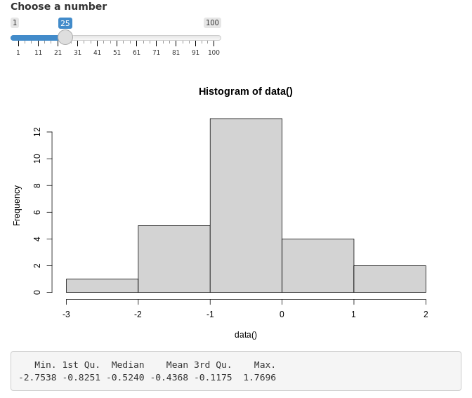
Note As the data variable we have in the example above is a reactive function, you have to remember to use () whenever you call that particular variable.
6 Isolating reactivity
In the same manner as above, sometimes you will notice that the Rshiny’s reactivity can be very quick! Take the below example and try to type in the title of the histogram slowly. You will notice that the histogram will keep changing as you type, because the rnorm() gets updated constantly as you type!
ui <- fluidPage(
sliderInput(inputId = "num",
label = "Choose a number",
value = 25, min = 1, max = 100),
textInput(inputId = "title",
label = "Write a title",
value = "Histogram of Random Normal Values"),
plotOutput("hist")
)
server <- function(input, output) {
output$hist <- renderPlot({
hist(rnorm(input$num), main = input$title)
})
}
shinyApp(ui = ui, server = server)plot
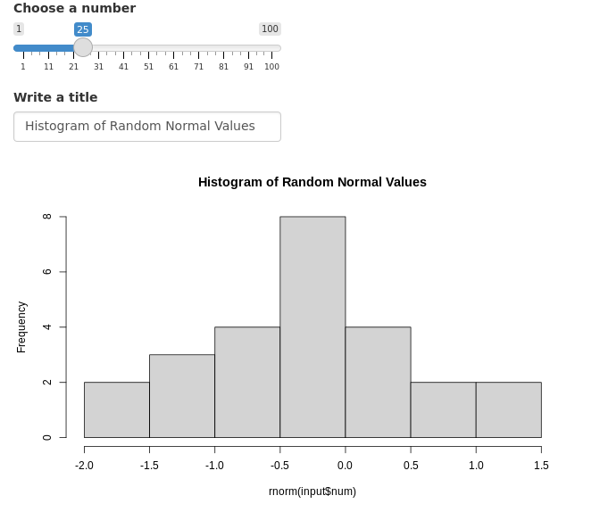
By using the isolate() function, we can make certain UI input components to not react for changes! This means you can change/decide the title of the plot first and then you can change the slider in the example above to decide on the histogram you want for a particular value!
ui <- fluidPage(
sliderInput(inputId = "num",
label = "Choose a number",
value = 25, min = 1, max = 100),
textInput(inputId = "title",
label = "Write a title",
value = "Histogram of Random Normal Values"),
plotOutput("hist")
)
server <- function(input, output) {
output$hist <- renderPlot({
hist(rnorm(input$num), main = isolate(input$title))
})
}
shinyApp(ui = ui, server = server)plot
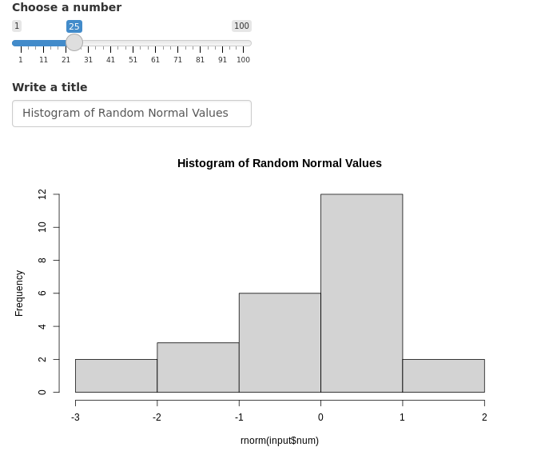
7 eventReactive()
This is similar to the observeEvent(), where it is used to send message like logs when you click on a button.
In the following example, we will see how to use eventReactive() with an action button and when you press it, the random numbers are only generated then. You can think of it as an update button. Let us look at the example below:
ui <- fluidPage(
sliderInput(inputId = "num",
label = "Choose a number",
value = 25, min = 1, max = 100),
textInput(inputId = "title",
label = "Write a title",
value = "Histogram of Random Normal Values"),
plotOutput("hist"),
actionButton(inputId = "click", label = "Update")
)
server <- function(input, output) {
randomVals <- eventReactive(input$click, {
rnorm(input$num)
})
output$hist <- renderPlot({
hist(randomVals(), main = input$title)
})
}
shinyApp(ui = ui, server = server)plot

8 Updating widgets
Widgets can be updated with new values dynamically. observe() and observeEvent() functions can monitor the values of interest and update relevant widgets.
shinyApp(
ui=fluidPage(
selectInput("data_input",label="Select data",choices=c("mtcars","faithful","iris")),
selectInput("header_input",label="Select column name",choices=NULL),
plotOutput("plot_output",width="400px")
),
server=function(input,output,session) {
getdata <- reactive({ get(input$data_input, 'package:datasets') })
observe({
updateSelectInput(session,"header_input",label="Select column name",choices=colnames(getdata()))
})
output$plot_output <- renderPlot({
#shiny::req(input$header_input)
#validate(need(input$header_input %in% colnames(getdata()),message="Incorrect column name."))
hist(getdata()[, input$header_input],xlab=input$header_input,main=input$data_input)
})
},
options=list(height=600))plot

In this example, the user selects a dataset and a column from the selected dataset to be plotted as a histogram. The column name selection widget must automatically update it’s choices depending on the selected dataset. This achieved using observe() where the updateSelectInput() function updates the selection choices. Notice that a third option session is in use in the server function. ie; server=function(input,output,session). And session is also the first argument in updateSelectInput(). Session keeps track of values in the current session.
When changing the datasets, we can see that there is a short red error message. This is because, after we have selected a new dataset, the old column name from the previous dataset is searched for in the new dataset. This occurs for a short time and causes the error. This can be fixed using careful error handling. We will discuss this in another section.
9 Error validation
Shiny returns an error when a variable is NULL, NA or empty. This is similar to normal R operation. The errors show up as bright red text. By using careful error handling, we can print more informative and less distracting error messages. We also have the option of hiding error messages.
shinyApp(
ui=fluidPage(
selectInput("data_input",label="Select data",
choices=c("","mtcars","faithful","iris")),
tableOutput("table_output")
),
server=function(input, output) {
getdata <- reactive({ get(input$data_input,'package:datasets') })
output$table_output <- renderTable({head(getdata())})
},
options=list(height="350px"))plot
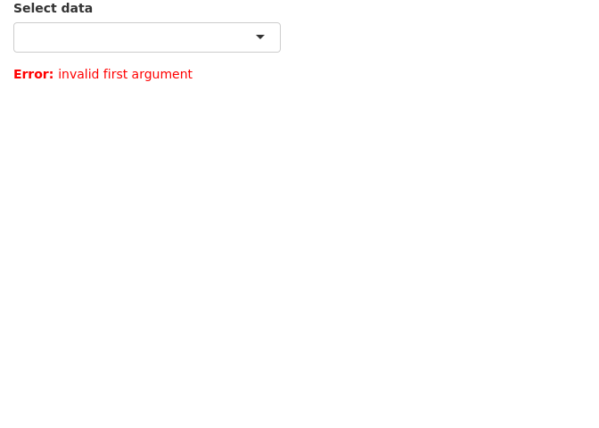
In this example, we have a list of datasets to select which is then printed as a table. The first and default option is an empty string which cannot be printed as a table and therefore returns an error.
We can add an extra line to the above app so that the selected string is validated before running downstream commands in the getdata({}) reactive function. The function validate() is used to validate inputs. validate() can be used with need() function or a custom function.
Below we use the need() function to check the input. It checks if the input is NULL, NA or an empty string and returns a specified message if TRUE. try() is optional and is used to catch any other unexpected errors.
shinyApp(
ui=fluidPage(
selectInput("data_input",label="Select data",
choices=c("","mtcars","faithful","iris")),
tableOutput("table_output")
),
server=function(input, output) {
getdata <- reactive({
validate(need(try(input$data_input),"Please select a data set"))
get(input$data_input,'package:datasets')
})
output$table_output <- renderTable({head(getdata())})
},
options=list(height="350px"))plot
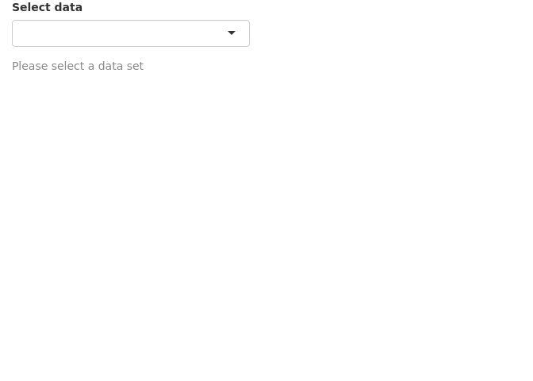
Now we see an informative grey message (less scary) asking the user to select a dataset.
We can use a custom function instead of using need(). Below, we have created a function called valfun() that checks if the input is NULL, NA or an empty string. This is then used in validate().
valfn <- function(x) if(is.null(x) | is.na(x) | x=="") return("Input data is incorrect.")
shinyApp(
ui=fluidPage(
selectInput("data_input",label="Select data",
choices=c("","mtcars","faithful","iris")),
tableOutput("table_output")
),
server=function(input, output) {
getdata <- reactive({
validate(valfn(try(input$data_input)))
get(input$data_input,'package:datasets')
})
output$table_output <- renderTable({head(getdata())})
},
options=list(height="350px"))plot
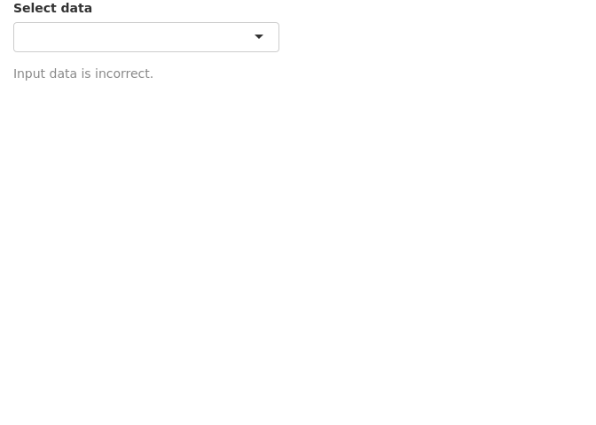
The last option is to simple hide the error. This may be used in situations where there is no input needed from the user. We use req() to check if the input is valid, else stop execution there till the condition becomes true.
shinyApp(
ui=fluidPage(
selectInput("data_input",label="Select data",
choices=c("","mtcars","faithful","iris")),
tableOutput("table_output")
),
server=function(input, output) {
getdata <- reactive({
shiny::req(try(input$data_input))
get(input$data_input,'package:datasets')
})
output$table_output <- renderTable({head(getdata())})
},
options=list(height="350px"))plot
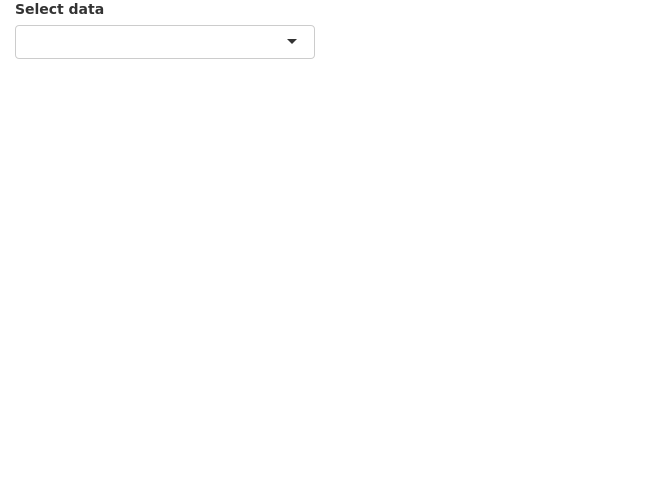
As expected there is no error or any message at all. This is not always the best to use this option as we need the user to do something. An informative message may be better than nothing.
Finally, instead of printing messages about the error or hiding the error, we can try to resolve the errors from the previous section in a more robust manner. shiny::req(input$header_input) is added to ensure that a valid column name string is available before running any of the renderPlot() commands. Second, we add validate(need(input$header_input %in% colnames(getdata()),message="Incorrect column name.")) to ensure that the column name is actually a column in the currently selected dataset.
shinyApp(
ui=fluidPage(
selectInput("data_input",label="Select data",choices=c("mtcars","faithful","iris")),
selectInput("header_input",label="Select column name",choices=NULL),
plotOutput("plot_output",width="400px")
),
server=function(input,output,session) {
getdata <- reactive({ get(input$data_input, 'package:datasets') })
observe({
updateSelectInput(session,"header_input",label="Select column name",choices=colnames(getdata()))
})
output$plot_output <- renderPlot({
shiny::req(input$header_input)
validate(need(input$header_input %in% colnames(getdata()),message="Incorrect column name."))
hist(getdata()[, input$header_input],xlab=input$header_input,main=input$data_input)
})
},
options=list(height=600))plot

Now, we do not see any error messages. Note that shiny apps on shinyapps.io do not display the complete regular R error message for security reasons. It returns a generic error message in the app. One needs to inspect the error logs to view the actual error message.
10 Download • Data
It is often desirable to let the user down data tables and plots as images. This is done using downloadHandler().
In the example below, we are downloading a table as a csv text file. We define a button that accepts the action input from the user. The downloadHandler() function has the file name argument, and the content argument where we specify the write.csv() command. Note that this example needs to be opened in a browser and may not in the RStudio preview. In the RStudio preview, click on Open in Browser.
shinyApp(
ui=fluidPage(
selectInput("data_input",label="Select data",
choices=c("mtcars","faithful","iris")),
textOutput("text_output"),
downloadButton("button_download","Download")
),
server=function(input, output) {
getdata <- reactive({ get(input$data_input, 'package:datasets') })
output$text_output <- renderText(paste0("Selected dataset: ",input$data_input))
output$button_download <- downloadHandler(
filename = function() {
paste0(input$data_input,".csv")
},
content = function(file) {
write.csv(getdata(),file,row.names=FALSE,quote=F)
})
},
options=list(height="200px")
)plot
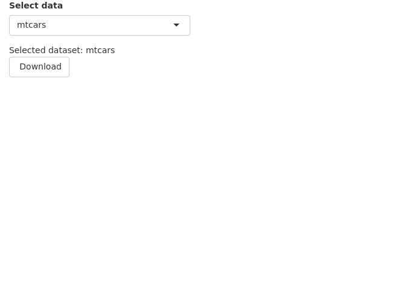
11 Download • Plot
In this next example, we are downloading a plot. In the content part of downloadHandler(), we specify commands to export a png image. Note that this example needs to be opened in a browser and may not in the RStudio preview. In the RStudio preview, click on Open in Browser.
shinyApp(
ui=fluidPage(
selectInput("data_input",label="Select data",
choices=c("mtcars","faithful","iris")),
textOutput("text_output"),
plotOutput("plot_output",height="300px",width="300px"),
downloadButton("button_download","Download")
),
server=function(input, output) {
getdata <- reactive({ get(input$data_input, 'package:datasets') })
output$text_output <- renderText(paste0("Selected dataset: ",input$data_input))
output$plot_output <- renderPlot({hist(getdata()[,1])})
output$button_download <- downloadHandler(
filename = function() {
paste0(input$data_input,".png")
},
content = function(file) {
png(file)
hist(getdata()[, 1])
dev.off()
})
},
options=list(height="500px")
)plot
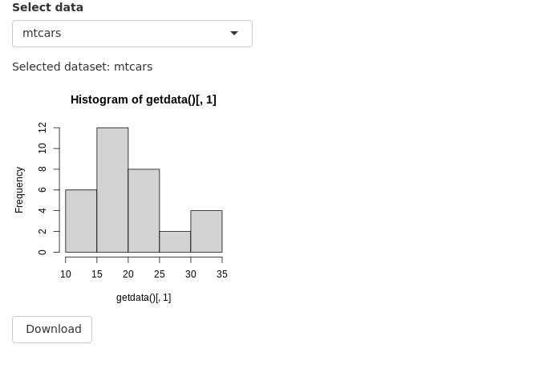
12 Shiny in Rmarkdown
Shiny interactive widgets can be embedded into Rmarkdown documents. These documents need to be live and can handle interactivity. The important addition is the line runtime: shiny to the YAML matter. Here is an example:
output
---
runtime: shiny
output: html_document
---
```{r}
library(shiny)
```
This is a standard RMarkdown document. Here is some code:
```{r}
head(iris)
```
```{r}
plot(iris$Sepal.Length,iris$Petal.Width)
```
But, here is an interactive shiny widget.
```{r}
sliderInput("in_breaks",label="Breaks:",min=5,max=50,value=5,step=5)
```
```{r}
renderPlot({
hist(iris$Sepal.Length,breaks=input$in_breaks)
})
```This code can be copied to a new file in RStudio and saved as, for example, shiny.Rmd. Then click ‘Knit’. Alternatively, you can run rmarkdown::run("shiny.Rmd").
13 Session info
sessionInfo()## R version 4.1.3 (2022-03-10)
## Platform: x86_64-pc-linux-gnu (64-bit)
## Running under: Ubuntu 18.04.6 LTS
##
## Matrix products: default
## BLAS: /usr/lib/x86_64-linux-gnu/openblas/libblas.so.3
## LAPACK: /usr/lib/x86_64-linux-gnu/libopenblasp-r0.2.20.so
##
## locale:
## [1] LC_CTYPE=C.UTF-8 LC_NUMERIC=C LC_TIME=C.UTF-8
## [4] LC_COLLATE=C.UTF-8 LC_MONETARY=C.UTF-8 LC_MESSAGES=C.UTF-8
## [7] LC_PAPER=C.UTF-8 LC_NAME=C LC_ADDRESS=C
## [10] LC_TELEPHONE=C LC_MEASUREMENT=C.UTF-8 LC_IDENTIFICATION=C
##
## attached base packages:
## [1] grid stats graphics grDevices utils datasets methods
## [8] base
##
## other attached packages:
## [1] shiny_1.7.2 ggimage_0.3.1 treeio_1.18.1
## [4] ggtree_3.2.1 pheatmap_1.0.12 swemaps_1.0
## [7] mapdata_2.3.0 maps_3.4.0 ggrepel_0.9.1
## [10] wesanderson_0.3.6 gridExtra_2.3 jpeg_0.1-9
## [13] ggpubr_0.4.0 cowplot_1.1.1 ggthemes_4.2.4
## [16] scales_1.2.1 forcats_0.5.2 stringr_1.4.1
## [19] purrr_0.3.5 readr_2.1.3 tidyr_1.2.1
## [22] tibble_3.1.8 tidyverse_1.3.2 reshape2_1.4.4
## [25] ggplot2_3.3.6 formattable_0.2.1 kableExtra_1.3.4
## [28] dplyr_1.0.10 lubridate_1.8.0 leaflet_2.1.1
## [31] yaml_2.3.5 fontawesome_0.3.0.9000 captioner_2.2.3
## [34] bookdown_0.29 knitr_1.40
##
## loaded via a namespace (and not attached):
## [1] googledrive_2.0.0 colorspace_2.0-3 ggsignif_0.6.3
## [4] ellipsis_0.3.2 fs_1.5.2 aplot_0.1.8
## [7] rstudioapi_0.14 farver_2.1.1 fansi_1.0.3
## [10] xml2_1.3.3 splines_4.1.3 cachem_1.0.6
## [13] jsonlite_1.8.2 broom_1.0.1 dbplyr_2.2.1
## [16] compiler_4.1.3 httr_1.4.4 backports_1.4.1
## [19] lazyeval_0.2.2 assertthat_0.2.1 Matrix_1.5-1
## [22] fastmap_1.1.0 gargle_1.2.1 cli_3.4.1
## [25] later_1.3.0 leaflet.providers_1.9.0 htmltools_0.5.3
## [28] tools_4.1.3 gtable_0.3.1 glue_1.6.2
## [31] Rcpp_1.0.9 carData_3.0-5 cellranger_1.1.0
## [34] jquerylib_0.1.4 vctrs_0.4.2 ape_5.6-2
## [37] svglite_2.1.0 nlme_3.1-155 crosstalk_1.2.0
## [40] xfun_0.33 ps_1.7.1 rvest_1.0.3
## [43] mime_0.12 lifecycle_1.0.3 rstatix_0.7.0
## [46] googlesheets4_1.0.1 promises_1.2.0.1 hms_1.1.2
## [49] parallel_4.1.3 RColorBrewer_1.1-3 curl_4.3.3
## [52] memoise_2.0.1 ggfun_0.0.7 yulab.utils_0.0.5
## [55] sass_0.4.2 stringi_1.7.8 highr_0.9
## [58] tidytree_0.4.1 rlang_1.0.6 pkgconfig_2.0.3
## [61] systemfonts_1.0.4 evaluate_0.17 lattice_0.20-45
## [64] patchwork_1.1.2 htmlwidgets_1.5.4 labeling_0.4.2
## [67] processx_3.7.0 tidyselect_1.2.0 plyr_1.8.7
## [70] magrittr_2.0.3 R6_2.5.1 magick_2.7.3
## [73] generics_0.1.3 DBI_1.1.3 pillar_1.8.1
## [76] haven_2.5.1 withr_2.5.0 mgcv_1.8-39
## [79] abind_1.4-5 modelr_0.1.9 crayon_1.5.2
## [82] car_3.1-0 utf8_1.2.2 tzdb_0.3.0
## [85] rmarkdown_2.17 readxl_1.4.1 callr_3.7.2
## [88] reprex_2.0.2 digest_0.6.29 webshot_0.5.4
## [91] xtable_1.8-4 httpuv_1.6.6 gridGraphics_0.5-1
## [94] munsell_0.5.0 viridisLite_0.4.1 ggplotify_0.1.0
## [97] bslib_0.4.0